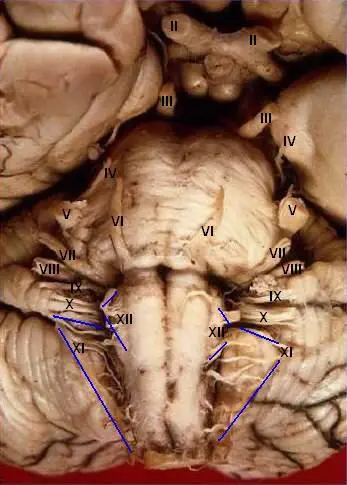
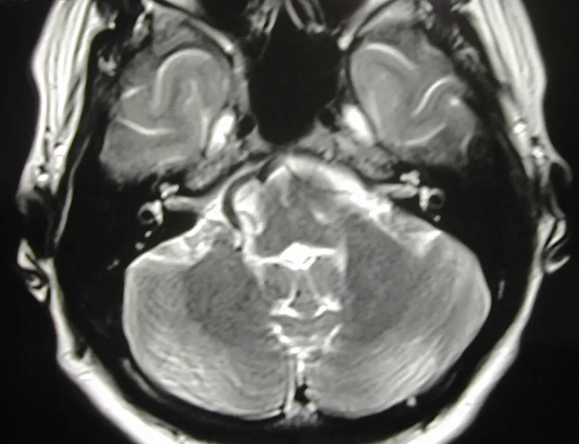

DX.7 — Spasme hémifacial
Le spasme hémifacial fait battre l'œil puis la joue d'un seul côté, même pendant le sommeil, parce qu'une artère comprime le nerf facial à sa sortie du tronc cérébralS1S3. Il ne tue pas, mais il isole socialement et gêne la lecture et la conduiteS2S3. Le médecin confirme la clinique, cherche une tumeur à l'IRM (imagerie par résonance magnétique), puis propose la toxine botulique ou la décompression microvasculaire, seul traitement causalS1S2.
1. Définition
La clinique de neurochirurgie de l'Inselspital de Berne définit le spasme hémifacial comme un trouble du mouvement de la musculature faciale, fait de contractions unilatérales, involontaires et répétitivesS1. Une revue britannique de 2025 précise que ces contractions sont paroxystiques et touchent les muscles innervés par le nerf facial du même côtéS2. Le trouble est le plus souvent dû à un conflit neurovasculaire, c'est-à-dire au contact d'un vaisseau avec le nerf facialS1.
2. Épidémiologie (Suisse, puis Europe)
L'Inselspital estime qu'environ 10 personnes sur 100 000 souffrent d'un spasme hémifacial, soit environ 800 personnes en SuisseS1. À Oslo, la prévalence mesurée atteint 9,8 pour 100 000 et monte à 39,7 pour 100 000 après 70 ansS5. En Finlande, l'incidence annuelle standardisée sur l'âge atteint 1,53 pour 100 000 habitantsS2. Les groupes touchés, l'évolution sans traitement et le poids pour le patient expliquent pourquoi ce diagnostic rare mérite d'être reconnu tôt.
Qui est touché : Suisse, puis Europe
| Donnée | Valeur | Population et source |
|---|---|---|
| Prévalence estimée | Environ 10 pour 100 000, soit environ 800 personnes | Suisse, InselspitalS1 |
| Prévalence mesurée | 9,8 pour 100 000 ; 39,7 pour 100 000 après 70 ans | Oslo, 50 patients traitésS5 |
| Incidence annuelle | 1,53 pour 100 000 ; femmes 1,94, hommes 1,05 | FinlandeS2 |
| Prévalence mondiale estimée | 14,5 pour 100 000 chez la femme, 7,4 chez l'homme | Revue de 2025S2 |
| Âge de début | Entre 45 et 65 ans le plus souvent ; âge moyen de 54 ans à Oslo | S1S3 |
| Côté | Gauche deux fois plus souvent que droit | S1 |
Les femmes sont atteintes deux fois plus souvent que les hommes, et le début se situe en général entre 45 et 65 ansS1. Seuls 1 à 6 % des patients débutent leur maladie avant 30 ans, ce qui doit faire chercher une cause secondaire chez le sujet jeuneS3. La forme bilatérale reste rare, avec 2,6 % des cas, et les formes familiales représentent 2 à 3 % des casS2. À Oslo, 36 % des patients prenaient un antihypertenseur, une proportion nettement supérieure à celle de la population généraleS5.
Évolution sans traitement
Sans traitement, les symptômes persistent en règle toute la vie et s'améliorent très rarement, selon l'équipe bernoiseS1. Les spasmes progressent souvent en intensité, en fréquence et en territoire atteint au fil des annéesS3. Après une longue évolution, une faiblesse faciale de bas grade peut s'installer du côté atteintS3.
Les données sur la rémission spontanée divergent cependant : les études anciennes rapportaient un contrôle sans traitement chez 2,3 à 4,2 % des patients seulementS2. Une série plus récente de 104 patients suivis 12 ans a observé 41,3 % de rémissions sans traitement, d'une durée moyenne de 6,4 ansS2. Un début après 45 ans s'associe à une aggravation plus rapide, alors que le sexe, l'hypertension et le diabète n'influencent pas la progressionS2.
Poids pour le patient et retard au traitement
Le spasme hémifacial ne réduit pas l'espérance de vie, si bien que beaucoup de patients choisissent un traitement non chirurgicalS2. La souffrance psychosociale domine pourtant : l'isolement social et la dépression en sont des conséquences fréquentesS1. Les troubles anxieux ne sont cependant pas plus fréquents que dans la population générale, contrairement à d'autres troubles du mouvementS3.
Le retard thérapeutique reste important : à Greifswald, 8,2 ans séparaient en moyenne le diagnostic de la chirurgieS3. Plus de la moitié de ces patients avaient découvert l'option chirurgicale par leurs propres recherchesS3. Dans certains groupes, seuls 10 % des patients sont adressés au neurochirurgien, avec un délai pouvant atteindre 5 ansS2.
3. Physiopathologie
Le signe ne se comprend qu'avec une base anatomique à connaîtreS6. Le nerf facial commande seul les muscles peauciers d'une hémiface ; une décharge sur son tronc fait donc contracter ensemble l'œil, la joue et la boucheS6. Le conflit siège dans une zone de transition fragile, au ras du tronc cérébral, où une artère pulsatile peut léser la myélineS1S4. La cascade lésionnelle relie cette lésion aux spasmes, et le tableau de corrélation relie chaque étape à son examen et à son traitement. Des causes secondaires, plus rares, imitent le conflit vasculaireS3.
Base à connaître : le nerf facial et son trajet
Le nerf facial porte l'innervation motrice de tous les muscles peauciers de la face et du cou, ainsi que celle du muscle stapédien de l'oreille moyenneS6. Il porte aussi des fibres sécrétoires lacrymales et salivaires, une sensibilité de la conque et le goût des deux tiers antérieurs de la langueS6.
Depuis son émergence du pont, il traverse l'angle pontocérébelleux près des nerfs trijumeau et vestibulocochléaire, puis entre dans le méat acoustique interne avec ce dernierS6. Il traverse ensuite le rocher, sort par le foramen stylomastoïdien, puis se divise dans la parotide en contingents supérieur et inférieurS6.
Le noyau facial reçoit une commande pyramidale bilatérale pour sa partie supérieure, mais unilatérale pour sa partie inférieureS6. Ainsi, une lésion centrale épargne le front, alors qu'une lésion du nerf touche toute l'hémiface, du front au couS6. Le spasme hémifacial suit la même logique périphérique : il touche l'orbiculaire de l'œil et peut gagner tout le territoire, jusqu'au platysmaS3.
Tronc cérébral, vue antérieure : émergence du nerf facial. Cette photographie anatomique montre une pièce humaine en vue antérieure et inférieure, avec les nerfs crâniens numérotés en chiffres romains.

Lisez d'abord seul ce cliché (tronc cérébral, vue antérieure : émergence du nerf facial) : cherchez vous-même le signe.
La copie annotée (tronc cérébral, vue antérieure : émergence du nerf facial) porte les repères numérotés décrits ci-dessous.
Lecture guidée. Les repères numérotés se lisent dans l’ordre suivant.
- Le pont est au centre de la pièce ; le nerf facial sort de son bord inférieur, au sillon bulbo-pontique.
- Le nerf facial gauche quitte le tronc cérébral à cet endroit, où un vaisseau peut le comprimer.
- Le nerf vestibulocochléaire chemine juste sous le facial, ce qui explique le risque auditif de la chirurgie.
- Les nerfs mixtes, glossopharyngien et vague, sortent plus bas du bulbe et bordent l’angle par en dessous.
Pièges. Deux erreurs de lecture guettent le débutant.
- Le nerf facial et le nerf vestibulocochléaire sont accolés dans l’angle : une lésion de cet angle touche souvent les deux nerfs.
- La zone vulnérable mesure quelques millimètres au ras du pont : un contact plus distal donne plus rarement des symptômes.
Ce que l'image décide. Ce repère anatomique explique pourquoi l’IRM doit cibler la sortie du nerf facial du tronc cérébral, et pourquoi la décompression expose l’audition.

La zone de transition : pourquoi ce segment souffre
À sa sortie du tronc cérébral, le nerf facial est seulement entouré d'une membrane arachnoïdienne, sans épinèvre ni cloisons conjonctives entre les fasciculesS3. Cette zone correspond aussi au passage de la myéline centrale, faite par les oligodendrocytes, à la myéline périphérique des cellules de SchwannS3. Ces particularités rendent le segment très sensible à la compressionS3.
L'équipe bernoise mesure cette zone de transition à 3 à 5 mm de longS1. Une équipe genevoise d'imagerie l'estime à 2,5 mm pour le nerf facial, contre 4 mm pour le trijumeauS4. Le nerf y est en outre relativement fixé, ce qui l'expose aux pulsations artérielles répétéesS2.
Cascade lésionnelle : de l'artère au spasme
Amorce. Les artères de l'angle pontocérébelleux s'allongent ou s'élargissent avec l'âge, ce qui crée de nouveaux contacts au cours de la vieS1. Cette ectasie progressive explique l'âge tardif du début, et elle est particulièrement fréquente chez les hypertendusS3. L'artère cérébelleuse antéro-inférieure (AICA), l'artère cérébelleuse postéro-inférieure (PICA) ou l'artère vertébrale sont le plus souvent en causeS2.
Développement. La pulsation artérielle permanente sur la zone de transition provoque une démyélinisation focaleS1S3. Le contact devient pathogène surtout lorsqu'il déforme le nerf : une déformation existait du côté atteint chez 70,3 % des patients, contre 1,8 % du côté sainS2.
Installation. Selon l'hypothèse périphérique, l'influx passe anormalement d'une fibre à sa voisine, c'est la transmission éphaptique, et naît spontanément dans la zone compriméeS3. Selon l'hypothèse centrale, les signaux antidromiques répétés rendent hyperexcitable le noyau moteur facial du tronc cérébralS3S2. Ces deux mécanismes ne s'excluent pas, et une troisième théorie implique les fibres sympathiques de la paroi artérielleS2.
Maintien. Tant que le vaisseau reste en place, l'hyperexcitabilité persiste, d'où une maladie qui dure toute la vie sans traitementS1. Lorsque le chirurgien écarte la boucle vasculaire, la réponse anormale appelée « lateral spread » disparaît pendant l'interventionS1.
Corrélation : perturbation, exploration, thérapeutique
| Perturbation | Exploration qui la montre | Thérapeutique qui la corrige (mécanisme) |
|---|---|---|
| Boucle artérielle au contact du nerf à sa sortie du pont | IRM pondérée en T2 à haute résolution, couplée à une angiographie par résonance magnétiqueS2 | La décompression microvasculaire écarte le vaisseau du nerfS1 |
| Hyperexcitabilité du nerf et de son noyau | Réponse « lateral spread » enregistrée pendant la chirurgieS1 | Les antiépileptiques oraux agiraient en bloquant des canaux sodiques ou calciques ; leur effet clinique reste faibleS2 |
| Décharge transmise à la plaque motrice | Observation clinique des contractionsS3 | La toxine botulique bloque de façon irréversible la libération présynaptique d'acétylcholineS3 |
| Lésion structurelle de l'angle ou du tronc cérébral | IRM de la fosse postérieureS3 | Le traitement de la cause relève de la neurochirurgie ou de la neurologieS3 |
Causes secondaires à ne pas manquer
Toute masse de l'angle pontocérébelleux peut produire le tableau : schwannome, méningiome ou kyste arachnoïdienS3. Un gliome, une sclérose en plaques ou un infarctus du tronc cérébral peuvent aussi rendre le nerf spontanément hyperexcitableS1S3. Une malformation artérioveineuse figure parmi les causes structurelles que l'IRM doit chercherS2.
Une paralysie faciale idiopathique peut laisser un spasme après la lésion du nerf, selon des observations rapportéesS3. Dans la série de Greifswald, une compression nette expliquait pourtant le spasme chez tous les patients opérés sauf 2 sur 110S3.
4. Démarche diagnostique
Le médecin écarte d'abord une lésion grave de l'angle pontocérébelleux ou du tronc cérébral, car une tumeur ou un infarctus peuvent produire le même spasmeS3. Il cherche ensuite les imitateurs fréquents de la liste : myokymie palpébrale, tic moteur palpébral et blépharospasme essentiel. Le tableau des diagnostics discriminants donne pour chacun le signe qui tranche, le piège et la conduite.
Diagnostics discriminants : les graves d'abord
| Diagnostic | Élément qui tranche | Piège | Conduite si positif |
|---|---|---|---|
| 🚩 Lésion de l'angle ou du tronc cérébral | L'IRM montre la tumeur, la plaque ou l'infarctusS3 | Un spasme typique peut cacher un schwannome ou un méningiomeS3 | Avis neurochirurgical ou neurologique selon la lésion |
| 🚩 Crise focale | L'EEG (électroencéphalogramme) montre des décharges épileptiformesS2 | Les crises focales simples peuvent toucher les muscles faciauxS3 | Prise en charge épileptologique |
| Blépharospasme essentiel | Les contractions sont bilatérales, synchrones et symétriquesS3 | Un début asymétrique peut faire croire à un spasme hémifacial | Voir le DX.8 |
| Tic facial | Les mouvements sont complexes, changent de côté et se suppriment volontairementS3 | Le tic paraît parfois unilatéral lors d'une seule consultation | Voir le DX.4 |
| Myokymie | L'EMG (électromyogramme) montre des bouffées de 5 à 150 Hz en doublets ou tripletsS2 | Une myokymie palpébrale ressemble au début périorbitaire du spasme | Voir le DX.3 |
| Synkinésie après paralysie faciale | Les contractions n'apparaissent qu'avec un mouvement volontaireS3 | L'antécédent de paralysie manque si on ne le demande pas | Rééducation ou toxine selon la gêne |
| Dystonie oromandibulaire | Elle touche surtout la bouche, la mâchoire, la langue et le pharynxS3 | L'atteinte de la bouche évoque à tort l'extension du spasme | Avis spécialisé des troubles du mouvement |
| Spasme hémimasticateur | Il provoque des contractions douloureuses des muscles masticateursS3 | La joue bouge, mais l'orbiculaire de l'œil reste indemne | Avis spécialisé des troubles du mouvement |
5. Anamnèse ciblée et drapeaux rouges
L'entretien établit d'abord le côté et le point de départ, puis le comportement pendant le sommeil et les déclencheurs, car ces trois traits séparent le spasme de ses imitateursS1S3. Il recherche ensuite les symptômes associés et les antécédents qui orientent vers une cause secondaire. Il mesure enfin le retentissement, qui décide du traitementS3. Les drapeaux rouges imposent chacun une action précise.
Symptôme : contractions d'un côté du visage
Question. Le médecin demande de quel côté et à quel endroit les contractions ont commencé.
Les spasmes partent typiquement d'un œil, puis s'étendent au reste de l'hémiface ou restent limités à sa partie supérieure ou inférieureS1.
Caractère typique. Une atteinte strictement unilatérale est typique, car le trouble naît d'un seul nerf facialS3. Un mouvement qui change de côté n'est pas typique : il oriente vers un ticS3. Une atteinte d'emblée bilatérale et synchrone oriente plutôt vers un blépharospasme essentielS3.
Rythme. Le patient décrit plusieurs spasmes par minute, brefs ou prolongés, de type clonique ou toniqueS1S3. Les contractions sont souvent douloureuses selon l'équipe bernoiseS1.
Symptôme : spasmes pendant le sommeil
Question. Le médecin demande si le conjoint voit le visage bouger pendant le sommeil.
Chez la plupart des patients, les symptômes persistent pendant le sommeilS3.
Caractère typique. La persistance nocturne est typique, car la décharge naît d'une lésion du nerf et non d'une commande volontaireS1. Son absence rapportée n'exclut pas le diagnostic, puisque le patient ne voit pas son visage endormi.
Facteurs déclenchants et calmants
Aggravants. La tension psychique, le stress et la parole accentuent souvent les spasmesS1S3. Ces facteurs sont typiques et ne signent pas une origine psychogène.
Suppression volontaire. Un patient qui peut retenir son mouvement quelques instants, avec un besoin préalable, décrit plutôt un ticS3. Un mouvement qui n'apparaît qu'au sourire ou à la fermeture volontaire de l'œil décrit une synkinésie après paralysie facialeS3.
Symptômes associés et antécédents
Clic dans l'oreille. Certains patients entendent un « clic » du côté atteint, que la contraction du muscle stapédien expliqueS3. Ce symptôme est typique, car le stapédien dépend aussi du nerf facialS6.
Larmoiement et vision. Un larmoiement accru et une gêne de la vision binoculaire sont possibles quand l'œil se ferme involontairementS1.
Atypiques. Une baisse d'audition, des vertiges ou une hypoesthésie faciale orientent vers une lésion de l'angle, qui touche souvent le trijumeau et le vestibulocochléaireS6. Une sclérose en plaques connue ou un accident vasculaire antérieur du tronc cérébral font aussi rechercher une cause secondaireS1.
Antécédents. Le médecin recherche une paralysie faciale antérieure, une hypertension, des injections antérieures de toxine et leur effetS3S5S2.
Retentissement : ce qui fait décider
Le médecin demande si les spasmes gênent la lecture ou la conduite, car l'occlusion de l'œil altère la vision binoculaire nécessaire à ces tâchesS3. Il interroge aussi sur le retrait social et l'humeur, puisque l'isolement et la dépression sont fréquentsS1. Une indication de traitement existe dès que le patient se sent limité dans sa qualité de vie ou qu'une fonction, comme le champ visuel, est altéréeS3.
Drapeaux rouges actionnables
| Drapeau rouge | Signification | Action immédiate |
|---|---|---|
| Déficit brutal d'un membre, de la parole ou de l'équilibre avec l'atteinte faciale | Une lésion du tronc cérébral, comme un infarctus, est possibleS1S6 | Le patient est adressé sans délai aux urgences neurologiques |
| Baisse d'audition, vertiges ou hypoesthésie faciale du même côté | Une masse de l'angle pontocérébelleux est possibleS3S6 | Une IRM de la fosse postérieure est demandée rapidement |
| Début avant 30 ans ou forme bilatérale | Ces présentations sont rares et imposent de vérifier le diagnosticS3S2 | Une IRM et un avis neurologique sont nécessaires |
| Troubles de la déglutition, de la parole ou de la respiration après toxine | La toxine a pu diffuser à distance du site d'injectionS7 | Le patient contacte immédiatement un médecin, selon l'AIPS (information professionnelle Swissmedic)S7 |
| Œil rouge et douloureux après toxine, avec fermeture incomplète | Une kératite d'exposition, voire un ulcère cornéen, est possibleS7 | Un examen ophtalmologique le jour même est nécessaire |
| Paralysie faciale ou surdité après décompression | Une complication de la chirurgie est survenueS3S1 | Le patient recontacte l'équipe neurochirurgicale sans attendre |
6. Examen physique ciblé, région par région
L'examen suit l'ordre où on le pratique chez ce patient : inspection de la face au repos, région orbitaire, joue et bouche, puis cou. Il teste ensuite la force faciale entre les spasmes, les autres nerfs crâniens, l'oreille et la surface de l'œil, avant l'examen neurologique des membres. Le normal se décrit d'abord, car l'asymétrie se juge par comparaison avec le côté sainS6.
Inspection de la face au repos
Normal. Au repos, les deux hémifaces sont symétriques, avec des rides frontales et des plis nasogéniens comparablesS6.
Geste. Le médecin observe le visage pendant plusieurs minutes de conversation, car la parole et la tension accentuent les spasmesS3.
Aspect pathologique. Il voit des secousses irrégulières, cloniques ou toniques, toujours du même côtéS3.
Région orbitaire : l'orbiculaire de l'œil
Signe. Le premier muscle atteint est souvent l'orbiculaire de l'œil, d'où une fermeture involontaire d'un seul œilS3.
Geste. Le médecin compare les deux fentes palpébrales et note si la fermeture d'un œil s'accompagne d'un mouvement de la joue du même côté.
Piège. Un frémissement fin et isolé de la paupière, sans fermeture de l'œil ni extension, évoque plutôt une myokymie.
Joue et commissure buccale
Signe. Avec le temps, les contractions gagnent la joue et la bouche du même côté, parfois tout le bas du visageS3S1.
Geste. Le médecin demande de sourire et de fermer fort les yeux, puis observe si les contractions de l'œil et de la bouche surviennent ensemble.
Valeur. La co-contraction spontanée de l'œil et de la bouche d'un seul côté est le profil caractéristique du spasme hémifacialS3. Une contraction de la bouche limitée aux mouvements volontaires oriente plutôt vers une synkinésieS3.
Cou : le platysma
Signe. Dans les formes marquées, le platysma, muscle peaucier du cou, se contracte aussi du côté atteintS3.
Geste. Le médecin regarde la face antérieure du cou pendant un spasme ; il voit la peau se plisser d'un seul côté.
Interprétation. L'atteinte du platysma confirme que tout le territoire du nerf facial participe, puisque ce muscle dépend aussi du nerf facialS6.
Force faciale entre les spasmes
Geste. Le médecin fait lever les sourcils, fermer les yeux avec force, montrer les dents et ouvrir la bouche contre résistanceS6.
Normal. Lors d'une fermeture forcée, les cils disparaissent symétriquement ; lors de l'ouverture contrariée de la bouche, les deux platysmas se contractentS6.
Pathologique. Une faiblesse faciale de bas grade peut apparaître après de nombreuses années de spasmeS3. Une faiblesse récente ou franche n'est pas typique et impose de chercher une lésion du nerfS6. Après une toxine, une parésie faciale transitoire est un effet attenduS7S8.
Autres nerfs crâniens : chercher l'angle pontocérébelleux
Geste. Le médecin teste la sensibilité des trois branches du trijumeau et le réflexe cornéen, puis il examine la motricité oculaire.
Interprétation. Si une lésion siège dans l'angle pontocérébelleux, le trijumeau et le vestibulocochléaire sont atteints avec le facialS6. Un déficit d'un de ces nerfs n'appartient donc pas au spasme primaire et impose l'IRM.
Oreille et audition
Geste. Le médecin compare l'audition des deux oreilles par une voix chuchotée ou un diapason, et il recherche des vertiges ou un nystagmus.
Valeur. Une surdité unilatérale du côté du spasme oriente vers une masse de l'angle, comme un schwannome vestibulaireS2S6. L'audition de départ sert aussi de référence avant une décompression, qui peut léser le nerf auditifS3.
Surface de l'œil
Geste. Le médecin vérifie l'occlusion complète des paupières et examine la cornée, surtout chez un patient déjà traité par toxine.
Aspect. Après une injection, une lagophtalmie, une kératite ponctuée ou une sécheresse oculaire sont des effets fréquentsS7. Une baisse du clignement peut provoquer des défauts épithéliaux durables, surtout lorsque le nerf facial est déjà atteintS7.
Examen neurologique des membres
Geste. Le médecin recherche une faiblesse, des réflexes vifs ou une ataxie d'un hémicorps, en quelques gestes comparatifs.
Interprétation. Une atteinte pyramidale associée oriente vers une lésion centrale, car une paralysie faciale centrale s'accompagne souvent d'une hémiplégieS6. Un tel signe exclut un spasme hémifacial primaire isolé et impose l'imagerie en urgence.
7. Approche syndromique
Trois syndromes structurent la lecture du patient : le syndrome hyperkinétique hémifacial, le syndrome de l'angle pontocérébelleux et le syndrome déficitaire facial. Le premier pose le diagnostic, tandis que les deux autres signalent une cause secondaire ou une complicationS3S6.
| Syndrome | Signes fonctionnels | Signes physiques |
|---|---|---|
| 7.1 Hyperkinétique hémifacial | Fermeture involontaire d'un œil, gêne à la lecture, clic auriculaire | Contractions unilatérales de l'orbiculaire, de la joue et du platysma |
| 7.2 Angle pontocérébelleux | Baisse d'audition, vertiges, engourdissement facial | Hypoacousie, hypoesthésie trigéminale, réflexe cornéen diminué |
| 7.3 Déficitaire facial | Œil qui ne ferme plus, bouche qui fuit | Effacement des rides et du pli nasogénien, signe de Charles Bell |
7.1 Syndrome hyperkinétique hémifacial
Définition du signe. Le spasme est une contraction involontaire, brève ou prolongée, des muscles innervés par le nerf facialS3. Il est clonique quand il secoue le muscle, tonique quand il le maintient contractéS3.
Recherche. Le médecin le voit à l'inspection prolongée, et la parole le fait souvent apparaîtreS3.
Mécanisme. Les décharges éphaptiques et ectopiques naissent dans la zone comprimée, puis activent ensemble des fibres destinées à des muscles différentsS3. C'est pourquoi l'œil et la bouche se contractent en même temps.
7.2 Syndrome de l'angle pontocérébelleux
Définition. Une lésion de l'angle touche le facial, le trijumeau et le vestibulocochléaire, qui y cheminent côte à côteS6.
Recherche. Le médecin teste l'audition, la sensibilité faciale et le réflexe cornéen de chaque côté.
Mécanisme. Une masse comme un schwannome vestibulaire ou un méningiome touche ces nerfs ensembleS2S3. Le spasme devient alors le symptôme d'une tumeur, ce qui change complètement la conduite.
7.3 Syndrome déficitaire facial périphérique
Définition. La paralysie faciale périphérique touche la motricité de toute une hémiface, front comprisS6.
Recherche. À la fermeture forcée, l'œil reste visible et le globe part en haut et en dehors : c'est le signe de Charles BellS6.
Contextes. Ce syndrome apparaît après de longues années de spasme, après une toxine, ou après une décompression sous forme d'une paralysie retardéeS3S7. Il exige alors la protection de la cornée, car l'œil ne se ferme plus.
8. Diagnostic positif et critères
Le diagnostic est clinique et repose sur des traits caractéristiques ; il doit être posé par un spécialisteS2S3. Le bilan de ce qui suffit sépare les arguments décisifs des faux arguments, et la classification du conflit sert à lire l'IRM avant une chirurgieS2.
Ce qui suffit, ce qui ne suffit pas
| Élément | Valeur |
|---|---|
| Contractions involontaires strictement unilatérales dans le territoire du nerf facialS3 | Ce signe est indispensable au diagnostic. |
| Début périorbitaire, puis extension à la joue, la bouche ou le platysmaS3 | Cette séquence est caractéristique. |
| Persistance pendant le sommeilS3 | Ce trait renforce le diagnostic. |
| Contact vasculaire visible à l'IRM, isolé | Il ne suffit pas, car un contact existe aussi chez 38,8 % des nerfs asymptomatiquesS2. |
| Absence de spasme pendant la consultation | Elle n'exclut rien, car les spasmes sont paroxystiquesS2. |
Le diagnostic reste donc une reconnaissance clinique experte, que les examens complètent sans jamais la remplacerS2S3.
Classification radiologique du conflit
Le conflit est dit absent lorsqu'on voit du liquide cérébrospinal entre vaisseau et nerf ; il y a contact lorsque le vaisseau touche le nerf sans liquide interposéS2. Il y a déformation lorsque le vaisseau déplace ou comprime le nerfS2.
Le nerf facial se décrit en quatre segments : segment attaché, point de détachement, segment cisternal proximal et segment cisternal distalS2. Sur le segment cisternal, seule la déformation, et non le simple contact, suffit à causer le spasmeS2. Un conflit au segment cisternal proximal existait du côté atteint chez 96,4 % des patients, contre 12,7 % du côté sainS2.
Le stade clinique se suit par des échelles de sévérité, comme l'échelle du Samsung Medical Center ou l'échelle de Jankovic, que les études utilisent pour mesurer l'évolutionS2.
9. Examens complémentaires
Référence. L'examen de référence reste clinique, car le diagnostic repose sur l'observation du mouvement par un spécialisteS3.
Première intention. L'IRM à haute résolution cherche à la fois une cause structurelle et le conflit neurovasculaireS2S1.
Alternatives. L'électromyogramme et l'électroencéphalogramme servent lorsque la clinique hésite avec une myokymie ou une criseS2.
Seconde intention. La relecture experte et le monitorage peropératoire préparent et guident la chirurgieS2S1.
Le tableau d'interprétation résume la conduite selon le résultat.
IRM cérébrale centrée sur l'angle pontocérébelleux
Indication. L'IRM permet d'éliminer les autres causes des spasmes et de montrer le contact entre le vaisseau et le nerf facialS1. L'équipe bernoise juge cette démonstration absolument nécessaire avant une chirurgieS1.
Prescription. Le bon demande des séquences axiales très fines de type CISS (« constructive interference in steady state »), qui contrastent fortement le liquide, les nerfs et les vaisseauxS1S3. Une revue de 2025 recommande à 3 T une angiographie 3D en temps de vol et une séquence 3D-FIESTA pour mieux caractériser le conflitS2.
Interprétation. On voit le plus souvent une boucle de l'AICA ou de la PICA qui touche le nerf facial, ou le tronc cérébral juste sous luiS1. L'artère vertébrale est plus rarement en cause, et une veine l'est très rarementS3. La précision pour identifier l'artère responsable atteint 77,8 % pour l'AICA et 76,9 % pour la PICAS2.
Pièges. Le nerf longe le tronc cérébral dans le segment de transition et ne s'en distingue pas toujours clairementS1. Lorsque plusieurs vaisseaux sont en cause, la précision tombe à 30 %S2. L'artère vertébrale et la PICA sont parfois surdécrites, alors que l'AICA est plus difficile à voirS2.
IRM axiale pondérée en T2 au niveau du pont. Cette coupe axiale pondérée en T2 montre le pont d'un patient atteint d'un spasme hémifacial droit, dont le côté droit apparaît à gauche.

Lisez d'abord seul ce cliché (irm axiale pondérée en t2 au niveau du pont) : cherchez vous-même le signe.
La copie annotée (irm axiale pondérée en t2 au niveau du pont) porte les repères numérotés décrits ci-dessous.
Lecture guidée. Les trois repères de la coupe se lisent de gauche à droite.
- Cette zone désigne l’angle pontocérébelleux droit, où l’auteur du cliché décrit le conflit artériel du nerf facial.
- Le pont sert de repère : le conflit symptomatique siège au ras de sa face latérale, à la sortie du nerf.
- Le côté gauche constitue le témoin : le médecin compare toujours les deux angles sur la même coupe.
Pièges. Deux erreurs de lecture guettent le débutant.
- Un contact artériel visible du côté sain est fréquent et ne prouve rien : seule la concordance avec le côté des spasmes compte.
- Une coupe épaisse peut manquer la boucle vasculaire : le protocole exige des séquences fines centrées sur les nerfs crâniens.
Ce que l'image décide. Un conflit concordant au ras du tronc cérébral, sans tumeur, rend le patient candidat à un avis neurochirurgical.

Électromyogramme facial
Indication. L'EMG complète la clinique lorsque les signes distinctifs manquent ou sont discretsS2S3.
Interprétation. Des bouffées brèves de 5 à 150 Hz, en doublets, triplets ou multiplets, orientent vers une myokymie et non vers un spasme hémifacialS2.
Piège. L'EMG ne remplace jamais l'observation du mouvement, qui reste le pivot du diagnosticS3.
Électroencéphalogramme
Indication. L'EEG se demande lorsque les épisodes évoquent une crise focale touchant la faceS2S3.
Interprétation. Des décharges épileptiformes signent une activité épileptique et réorientent vers l'épileptologieS2. Un tracé normal entre les épisodes ne permet cependant pas d'exclure une épilepsie.
Relecture experte de l'IRM
L'interprétation exige un radiologue ou un neurochirurgien familier de l'anatomie de la racine du nerf facialS2. Les premiers comptes rendus manquent souvent une compression aux segments attaché ou cisternal, ou accusent à tort un contact fortuitS2.
Chez des patients non guéris après décompression, une IRM refaite a montré des conflits persistants en amont du site opéréS2. Une reconstruction en trois dimensions permet de mieux repérer le vaisseau responsable avant l'opérationS2.
Monitorage peropératoire
La décompression se fait sous neuromonitorage continu, avec un EMG du nerf facial et des potentiels évoqués auditifsS3. Ces mesures surveillent la conduction et l'excitabilité du nerf facial, et elles guident le déplacement de l'anse vasculaireS1. La disparition du « lateral spread » au moment où l'anse s'écarte prédit le résultat de l'opérationS1.
Interprétation : résultat, signification, conduite
| Résultat | Signification | Conduite |
|---|---|---|
| Tumeur, kyste, plaque ou infarctus à l'IRM | Le spasme est secondaireS3 | Le patient reçoit un avis spécialisé de la cause |
| Déformation du nerf par une artère, du côté atteint | Le conflit est très probablement responsableS2 | Le médecin propose un avis neurochirurgical |
| Simple contact au segment cisternal distal | Le contact peut être fortuitS2 | Une relecture experte précède toute chirurgie |
| Contact du côté sain seulement | Ce contact n'explique pas le spasmeS2 | Le radiologue cherche un conflit concordant |
| Bouffées myokymiques à l'EMG | Le diagnostic est une myokymieS2 | Le médecin suit le DX.3 |
| Décharges épileptiformes à l'EEG | Le diagnostic est une crise focaleS2 | Le patient est adressé en épileptologie |
10. Arbre décisionnel
- Si l'atteinte faciale s'accompagne d'un déficit d'un membre, de la parole ou de l'équilibre, alors le patient part aux urgences neurologiquesS6S1.
- Si les contractions sont bilatérales et synchrones, alors le médecin suit la piste du blépharospasme essentielS3.
- Si les contractions changent de côté ou se retiennent volontairement, alors le médecin évoque un ticS3.
- Si les contractions sont unilatérales et associent l'œil et la bouche, alors le médecin demande une IRM à haute résolutionS3S2.
- Si l'IRM montre une tumeur ou une lésion du tronc cérébral, alors la cause est traitée en prioritéS3.
- Si l'IRM montre un conflit concordant, alors le médecin propose la toxine ou la décompression selon la gêne et le choix éclairé du patientS3S2.
- Si la toxine perd son effet ou n'est plus tolérée, alors le patient reçoit l'information sur la décompressionS3S2.
11. Prise en charge selon les recommandations suisses
But. Le traitement vise la disparition des spasmes ou leur réduction de plus de 90 %, critère de succès retenu par les équipes chirurgicalesS1S3. Il protège aussi la cornée, la vision binoculaire et la vie sociale du patientS3S7.
Moyens. Le médecin doit connaître la conduite d'urgence chronologique devant les rares complications graves. Il propose d'abord la toxine botulique, traitement symptomatique de référence, puis la décompression microvasculaire, seul traitement causalS3. Les médicaments disponibles se choisissent selon leur AIPS ; les mesures non médicamenteuses, les situations spéciales et le volet social complètent la décision.
Surveillance et pronostic. La surveillance suit l'effet de chaque cycle de toxine et les suites opératoires. Le pronostic et les critères de guérison guident l'information du patient avant et après la chirurgie.
Urgence — conduite chronologique
Le spasme hémifacial lui-même reste sans danger vitalS2. Trois situations exigent pourtant d'agir sans délai : un déficit neurologique associé, une diffusion de la toxine et une complication après décompression.
Dans les minutes. Un spasme facial accompagné d'un déficit d'un membre, de la parole ou de l'équilibre peut révéler un infarctus du tronc cérébralS1S6. Le médecin oriente alors le patient vers la filière d'urgence neurologique et ne retarde pas l'imagerie pour traiter le spasme.
Dans les heures après une toxine. Des troubles de la déglutition, de la parole ou de la respiration imposent de contacter immédiatement un médecinS7. Ces effets de diffusion surviennent de plusieurs heures à plusieurs semaines après l'injection, et quelques cas ont été mortelsS7. En cas de paralysie des muscles respiratoires, l'intubation et la ventilation deviennent nécessaires jusqu'à la récupérationS7.
Dans les jours après une toxine. Un œil rouge et douloureux qui ferme mal fait craindre une kératite ou un ulcère cornéenS7. Le médecin traite activement toute lésion épithéliale par collyre protecteur, pommade, lentille souple thérapeutique ou occlusionS7.
Dans les semaines après une décompression. Une paralysie faciale retardée apparaît en moyenne 12 jours après l'opération, chez 3 à 8 % des patientsS3. Elle régresse presque toujours complètement, mais elle exige la protection de l'œil et un contact avec l'équipe opératoireS3. Une hémorragie ou un infarctus du cervelet ou du tronc cérébral menacent la vie dans moins de 1 % des casS3.
Décompression microvasculaire
Principe. Sous anesthésie générale et par une craniotomie rétrosigmoïde, le chirurgien libère le nerf facial du vaisseau qui le comprime à sa sortie du tronc cérébralS3. Il interpose une éponge de téflon entre le vaisseau et le tronc cérébral, ou il fixe l'artère à la dure-mère dans les cas complexesS3.
Débat technique. Une revue de 2025 préfère mobiliser ou transposer l'artère plutôt que d'interposer seulement un matériel, car ce dernier peut provoquer des adhérencesS2. L'interposition reste néanmoins pratiquée dans de nombreux centresS2.
Résultats. Six mois après l'opération, 80 à 90 % des patients n'ont plus de symptômes ou ont une réduction des spasmes de plus de 90 %S1. L'amélioration survient en général 2 à 3 jours après l'intervention, parfois après quelques semainesS1. Un effet retardé s'observe dans jusqu'à 30 % des cas, en général vers 30 jours, parfois jusqu'à un anS2.
Risques. Une atteinte immédiate du nerf facial ou une baisse d'audition du côté opéré touchent environ 3 % des patients, et des vertiges 2 %S1. Une atteinte auditive, transitoire ou définitive, touche 1,5 à 8 % des opérés selon les grandes sériesS3. Une parésie faciale définitive reste rare : elle touche 0,9 % des casS1.
Choix. L'option chirurgicale doit être expliquée à tout patient qui présente des symptômes univoques, puisqu'elle est le seul traitement causalS3. Les auteurs recommandent une chirurgie précoce chez le sujet jeune, car les résultats sont nettement moins bons après une longue évolutionS3. Une toxine préalable ne diminue pas les chances de succès chirurgicalS2.
Pharmacologie : ce que dit chaque AIPS
En Suisse, BOTOX® et Dysport®, deux toxines botuliniques de type A, portent l'indication du spasme hémifacial dans leur AIPSS7S8. Leurs unités ne sont pas interchangeables, si bien qu'une dose ne se transpose jamais d'une spécialité à l'autreS7S8.
L'équipe bernoise cite aussi la carbamazépine, le clonazépam, le baclofène et la gabapentine en début de traitementS1. Leur succès est faible ou bref, et ils ne conviennent qu'aux formes très légèresS1. Aucune de leurs AIPS ne mentionne le spasme hémifacial, si bien que leur emploi se fait hors indication et sans dose de référence suisseS9S10S11S12.
| Molécule ® | Dose AIPS | Voie | Durée | Contre-indication majeure |
|---|---|---|---|---|
| Toxine botulique A, BOTOX® (n° 52433) | Comme un blépharospasme unilatéral : 1,25 à 2,5 unités par site, au plus 25 unités par œil au départS7 | Intramusculaire | Effet d'environ 3 mois, cycles répétés | Infection au site d'injectionS7 |
| Toxine botulique A, Dysport® (n° 55057) | Injection limitée à l'œil atteint : 40 U au départ, au plus 120 U par œilS8 | Sous-cutanée | Pas plus souvent que toutes les 12 semaines | Hypersensibilité à un constituantS8 |
| Carbamazépine, Tegretol® (n° 29789) | Aucune dose AIPS pour cette indication | Orale | Essai court | Bloc auriculo-ventriculaireS9 |
| Clonazépam, Rivotril® (n° 37756) | Aucune dose AIPS pour cette indication | Orale | Essai court | MyasthénieS10 |
| Baclofène, Lioresal® (n° 36083) | Aucune dose AIPS pour cette indication | Orale | Essai court | Hypersensibilité au baclofèneS11 |
| Gabapentine, Neurontin® (n° 52520) | Aucune dose AIPS pour cette indication | Orale | Essai court | Hypersensibilité à la substanceS12 |
Toxine botulique de type A — BOTOX® (flacons de 50 et 100 unités, n° 52433)S7
| Indication | Traitement symptomatique du blépharospasme, de l'hémispasme facial et des dystonies focales associées, chez les patients de plus de 12 ansS7 |
|---|---|
| Mécanisme | La toxine bloque la transmission cholinergique présynaptique de façon irréversible ; l'effet débute dans les trois jours et culmine en une à deux semainesS3S7 |
| Dose AIPS | Le patient est traité comme pour un blépharospasme unilatéral : 1,25 à 2,5 unités par site prétarsal de l'orbiculaire, puis injections des autres muscles faciaux selon le degré de spasmeS7. La dose initiale ne dépasse pas 25 unités par œilS7. Elle peut être doublée aux séances suivantes si la réponse est insuffisante ; plus de 5 unités par site apportent peuS7. La dose cumulée de l'adulte ne dépasse pas 400 unités par période de 12 semaines, toutes indications confonduesS7. |
| Durée | L'effet persiste environ 3 mois ; un intervalle inférieur à trois mois n'apporte aucun bénéficeS7 |
| Contre-indications | L'hypersensibilité connue à la toxine ou à un excipient et l'infection au site d'injection la contre-indiquentS7 |
| Précautions | La myasthénie, le syndrome de Lambert-Eaton et les maladies du motoneurone imposent une extrême prudence ; le glaucome à angle fermé aussiS7 |
| Grossesse | BOTOX ne doit pas être utilisé pendant la grossesse, ni chez la femme sans contraception, sauf nécessité absolueS7 |
| Allaitement | Son passage dans le lait est inconnu, et son emploi pendant l'allaitement ne peut pas être recommandéS7 |
| Effets indésirables | Ptose palpébrale chez 11 % des patients ; kératite ponctuée, lagophtalmie et sécheresse oculaire fréquentes ; perforation cornéenne très rareS7 |
| Interactions | Les aminoglycosides, la spectinomycine et les myorelaxants peuvent potentialiser la toxineS7 |
Dans une étude ouverte de 56 patients atteints de spasme hémifacial, tous se sont améliorés, nettement chez 62,5 % d'entre euxS7.
Toxine botulique de type A — Dysport® (flacons de 300 U et 500 U, n° 55057)S8
| Indication | Traitement symptomatique du blépharospasme, du spasme hémifacial et des dystonies focales associées ; doses valables pour les adultes de tous âgesS8 |
|---|---|
| Dose AIPS | L'injection se limite à l'œil atteint : 10 U médial et 10 U latéral dans l'orbiculaire supérieur et inférieur au départS8. La dose peut monter à 60, puis 80 U par œil, sans dépasser 120 U par œilS8. |
| Particularité | Un contrôle EMG peut être nécessaire pour repérer les petits muscles atteints du bas du visageS8 |
| Durée | L'amélioration apparaît en 2 à 4 jours ; les injections se répètent environ toutes les 12 semaines, jamais plus souventS8 |
| Contre-indications | Une hypersensibilité démontrée à un constituant la contre-indiqueS8 |
| Grossesse | Dysport ne devrait pas être utilisé pendant la grossesse, sauf nécessité absolueS8 |
| Allaitement | Le passage dans le lait est inconnu, et l'emploi pendant l'allaitement n'est pas recommandéS8 |
| Effets indésirables | Ptose chez 11 % des patients ; parésie faciale, diplopie, sécheresse oculaire et œdème palpébral fréquentsS8 |
| Interactions | Les aminoglycosides, les myorelaxants et les curares non dépolarisants renforcent l'effet de la toxineS8 |
Carbamazépine — Tegretol® (n° 29789)S9
| Indication AIPS | Épilepsie, névralgie essentielle du trijumeau et névralgie essentielle du glossopharyngien ; le spasme hémifacial n'y figure pasS9 |
|---|---|
| Dose | L'AIPS ne donne aucune dose pour le spasme hémifacial ; le médecin ne prescrit qu'après avis spécialisé |
| Contre-indications | Hypersensibilité à la carbamazépine ou aux tricycliques, bloc auriculo-ventriculaire, dépression médullaire, antécédent de porphyrie hépatique, association aux inhibiteurs de la monoamine-oxydase déconseilléeS9 |
| Grossesse | Le médicament expose à des malformations et à des troubles du neurodéveloppement ; l'AIPS l'exclut pour les douleurs neuropathiques et impose alors une alternativeS9 |
| Allaitement | Le médicament passe dans le lait ; l'allaitement s'interrompt si l'enfant prend mal du poids, somnole ou fait une réaction cutanéeS9 |
| Effets à annoncer | Somnolence, vertiges, ataxie et faiblesse, surtout chez le sujet âgéS2 |
Clonazépam — Rivotril® (n° 37756)S10
| Indication AIPS | Épilepsies de l'enfant et de l'adulte et état de mal épileptique ; le spasme hémifacial n'y figure pasS10 |
|---|---|
| Dose | L'AIPS ne donne aucune dose pour le spasme hémifacial |
| Contre-indications | Hypersensibilité, insuffisance respiratoire ou hépatique sévère, dépendance connue et myasthénieS10 |
| Grossesse | Le médicament ne s'administre pas pendant la grossesse, sauf nécessité absolueS10 |
| Allaitement | Il passe dans le lait maternel et ne doit pas être utilisé pendant l'allaitementS10 |
| Risque à annoncer | Une dépendance psychique et physique peut apparaître dès les doses thérapeutiques, avec sevrage à l'arrêt brutalS10 |
Baclofène — Lioresal® (n° 36083)S11
| Indication AIPS | Spasticité grave de la sclérose en plaques et spasticité médullaire ; le spasme hémifacial n'y figure pasS11 |
|---|---|
| Dose | L'AIPS ne donne aucune dose pour le spasme hémifacial |
| Contre-indications | Hypersensibilité connue au baclofène ou à un excipient ; prudence en cas de psychose ou d'état confusionnelS11 |
| Grossesse | Le médicament ne s'administre pas pendant la grossesse, sauf nécessité absolue ; un sevrage néonatal est possibleS11 |
| Allaitement | La substance ne doit pas être administrée pendant l'allaitementS11 |
Gabapentine — Neurontin® (n° 52520)S12
| Indication AIPS | Crises focales et douleurs neuropathiques diabétiques ou postherpétiques de l'adulte ; le spasme hémifacial n'y figure pasS12 |
|---|---|
| Dose | L'AIPS ne donne aucune dose pour le spasme hémifacial |
| Contre-indications | Hypersensibilité au principe actif ou à un excipientS12 |
| Grossesse | Une prise au premier trimestre peut causer des malformations sévères ; le médicament s'évite sauf bénéfice maternel clairS12 |
| Allaitement | La gabapentine passe dans le lait ; il faut arrêter soit l'allaitement, soit le traitementS12 |
| Tolérance | Elle pourrait être mieux tolérée que la carbamazépine ou le clonazépam chez le sujet âgé, selon une revue de 2025S2 |
Mesures non médicamenteuses
L'application de chaleur figure parmi les options simples, mais elle ne remplace pas un traitement efficaceS3. La protection de la cornée devient prioritaire dès que l'œil ferme mal après une injectionS7.
La radiofréquence pulsée réduit brièvement les spasmes, mais elle provoque souvent une parésie faciale défiguranteS2. L'électroacupuncture repose sur un seul cas rapporté, avec rechute en 6 moisS2. Ces deux techniques ne s'envisagent qu'en dernier recoursS2.
Situations spéciales
| Situation | Conduite |
|---|---|
| Grossesse | Les deux toxines s'évitent sauf nécessité absolue ; la femme en âge de procréer traitée par BOTOX utilise une contraceptionS7S8 |
| Allaitement | Les deux toxines ne sont pas recommandées, car leur passage dans le lait est inconnuS7S8 |
| Sujet âgé | BOTOX ne demande pas d'adaptation, mais il débute à la dose minimale ; les médicaments oraux sédatifs se tolèrent malS7S2 |
| Enfant de moins de 12 ans | Aucune étude n'établit la sécurité de BOTOX dans le spasme hémifacial à cet âgeS7 |
| Sujet jeune | Le début avant 30 ans fait chercher une cause, et la chirurgie précoce donne de meilleurs résultatsS3 |
| Myasthénie ou maladie neuromusculaire | La toxine expose à une faiblesse prononcée et à des effets systémiquesS7 |
| Risque anesthésique élevé | La toxine reste le seul traitement symptomatique efficace lorsque la chirurgie est exclueS3 |
Volet social, conduite et travail
Une fermeture involontaire de l'œil limite la vision binoculaire nécessaire à la conduite, si bien que le médecin évalue l'aptitude à conduireS3. Après une injection, l'asthénie, la faiblesse, les vertiges et les troubles visuels peuvent aussi réduire cette aptitudeS7.
La souffrance psychosociale et l'isolement justifient de parler du travail, de l'humeur et d'un soutien psychologiqueS1. Le patient doit savoir que la toxine se répète tous les 3 à 6 mois, ce qui pèse sur les personnes fragiles ou très occupéesS2.
Surveillance
| Quoi | Quand | Seuil d'action |
|---|---|---|
| Effet de la toxine | Effet attendu en quelques jours, maximal en une à deux semainesS7 | Une réponse insuffisante autorise une dose plus forte au cycle suivantS7 |
| Ptose, diplopie, parésie faciale | À chaque cycle d'injection | La dose ou les sites se corrigent au cycle suivantS7 |
| Cornée et occlusion palpébrale | Après chaque injection | Toute lésion épithéliale se traite activementS7 |
| Perte d'effet de la toxine | Au fil des années | Le patient reçoit l'information sur la décompressionS3 |
| Fonction faciale et audition après chirurgie | Dans les deux premières semaines | Une paralysie retardée ou une surdité imposent un contact avec l'équipeS3 |
La perte d'effet de la toxine divise les sources : l'Inselspital la décrit au fil du temps, alors qu'une revue de 2025 rapporte une efficacité maintenue jusqu'à 10 ansS1S2. La résistance immunitaire reste rare, car les doses utilisées dans ce trouble sont faiblesS2.
Pronostic, critères de guérison et information de sortie
Toxine. La toxine soulage nettement 85 à 95 % des patients, mais elle ne guérit pas et se répète tous les 3 à 4 moisS3. La paralysie faciale transitoire, la diplopie et la ptose en sont les effets indésirables courantsS3.
Chirurgie. Une méta-analyse de 22 études et 5685 patients a retenu 91,1 % de guérisons après près de 3 ans, avec 2,4 % de récidivesS1. Chez 5 à 10 % des patients, l'amélioration reste partielle, et autant n'en tirent aucun bénéfice netS1. Jusqu'à 9 % des patients ont besoin d'une réintervention, qui réussit moins bien et se complique davantageS2.
Critères de guérison. Le patient est guéri lorsqu'il n'a plus de symptômes, ou lorsqu'il garde une réduction des spasmes de plus de 90 % au contrôle de six moisS1.
Information de sortie après décompression. Le patient reçoit quatre consignes avant son retour à domicile.
- Le patient sait que l'amélioration peut tarder de quelques jours à plusieurs semaines, et parfois jusqu'à un anS1S2.
- Il signale toute faiblesse du visage, car une paralysie retardée survient vers le douzième jour en moyenneS3.
- Il signale toute baisse d'audition ou tout vertige du côté opéré, puisque ces deux complications sont connuesS1.
- Il sait qu'un échec initial fait rechercher une réintervention possible, car l'artère peut se déplacer de nouveauS1.
12. Prévention
Primaire. Aucune mesure de prévention primaire n'est proposée dans les revues lues, même si l'hypertension s'associe au troubleS5S2.
Secondaire. La reconnaissance précoce et l'adressage rapide au neurochirurgien évitent un retard moyen qui peut atteindre 5 ans entre diagnostic et chirurgieS2.
Tertiaire. La protection de la cornée après injection, l'adaptation de la conduite automobile et la surveillance des suites opératoires limitent les séquellesS7S3.
13. Points clés
- Le spasme hémifacial contracte d'un seul côté l'œil, puis la joue et la bouche, et il persiste souvent pendant le sommeilS3.
- Une artère comprime le nerf facial dans sa zone de transition, au ras du tronc cérébral, où la myéline centrale devient périphériqueS3S1.
- L'IRM fine de l'angle pontocérébelleux cherche d'abord une tumeur, puis un conflit concordant avec le côté des spasmesS1S2.
- La toxine botulique soulage la plupart des patients, mais seule la décompression microvasculaire traite la causeS3.
- Les unités de BOTOX et de Dysport ne sont pas interchangeables, et chaque dose suit l'AIPS de sa spécialitéS7S8.
14. Pièges et questions fréquentes à l'examen fédéral suisse
| Question | Réponse | Raison |
|---|---|---|
| Un contact artériel avec le nerf facial à l'IRM suffit-il au diagnostic ? | Non. | Un contact existe aussi chez 38,8 % des nerfs asymptomatiques ; la concordance et la déformation comptent (point 8)S2. |
| Des spasmes bilatéraux synchrones des paupières évoquent-ils un spasme hémifacial ? | Non, ils évoquent un blépharospasme essentiel. | Le spasme hémifacial est strictement unilatéral (point 4)S3. |
| Faut-il une IRM devant un spasme hémifacial typique ? | Oui. | L'IRM élimine une tumeur de l'angle ou une lésion du tronc cérébral (point 9)S1S3. |
| Quel est le seul traitement causal ? | La décompression microvasculaire. | Elle écarte l'artère du nerf, alors que la toxine reste symptomatique (point 11)S3. |
| Peut-on reprendre chez Dysport la dose en unités utilisée avec BOTOX ? | Non. | Les unités de chaque spécialité ne sont pas interchangeables (point 11)S7S8. |
| Quel risque sensoriel annonce-t-on avant une décompression ? | Une baisse d'audition du côté opéré. | Le nerf vestibulocochléaire chemine contre le facial ; une atteinte auditive touche 1,5 à 8 % des opérés (point 3)S3. |
| Un patient opéré présente une paralysie faciale au douzième jour : est-ce un échec définitif ? | Non. | La paralysie retardée régresse presque toujours complètement (point 11)S3. |
| Après une toxine, un patient avale mal et parle difficilement : que faire ? | Il contacte immédiatement un médecin. | La diffusion de la toxine à distance peut être grave, voire mortelle (point 11)S7. |
| Une fermeture de l'œil qui n'apparaît qu'au sourire après une paralysie faciale est-elle un spasme hémifacial ? | Non, c'est une synkinésie. | La synkinésie n'apparaît qu'avec un mouvement volontaire (point 5)S3. |
Sources
Toutes les sources ont été consultées le 11.11.2026 (Europe/Zurich).
- [S1] Inselspital, Hôpital universitaire de Berne, clinique de neurochirurgie. Hémispasme facial – diagnostic et traitement (page institutionnelle, © 2026). https://neurochirurgie.insel.ch/fr/maladies-traitees-specialites/neurochirurgie-fonctionnelle-et-douleur/troubles-du-mouvement/hemispasme-facial
- [S2] Jesuthasan A, Natalwala A, Davagnanam I, Saifee T, Zrinzo L. Hemifacial spasm: an update on pathophysiology, investigations and management. Journal of Neurology 2025;272(8):502. doi:10.1007/s00415-025-13220-y. https://pmc.ncbi.nlm.nih.gov/articles/PMC12245930/
- [S3] Rosenstengel C, Matthes M, Baldauf J, Fleck S, Schroeder H. Hemifacial spasm: conservative and surgical treatment options. Deutsches Ärzteblatt International 2012;109(41):667-73. doi:10.3238/arztebl.2012.0667. https://pmc.ncbi.nlm.nih.gov/articles/PMC3487151/
- [S4] Haller S, Etienne L, Kövari E, Varoquaux AD, Urbach H, Becker M (Université et Hôpitaux universitaires de Genève). Imaging of neurovascular compression syndromes. AJNR American Journal of Neuroradiology 2016;37(8):1384-92 (résumé). doi:10.3174/ajnr.A4683. https://pubmed.ncbi.nlm.nih.gov/26892985/
- [S5] Nilsen B, Le KD, Dietrichs E. Prevalence of hemifacial spasm in Oslo, Norway. Neurology 2004;63(8):1532-3 (résumé). doi:10.1212/01.wnl.0000142080.85228.e8. https://pubmed.ncbi.nlm.nih.gov/15505186/
- [S6] Collège des enseignants de neurologie (CEN). Chapitre 9 : sémiologie des nerfs crâniens, section nerf facial (ouvrage en ligne). https://www.cen-neurologie.fr/premier-cycle/les-fondamentaux-de-la-pathologie-neurologique/la-semiologie-neurologique-et-ses-bases-anatomofonctionnelles/chapitre-9-semiologie-des-nerfs-craniens
- [S7] Swissmedic, information professionnelle (AIPS) BOTOX® (toxine botulique de type A), n° 52433, AbbVie AG, mise à jour mai 2025. https://files.refdata.ch/simis-public-prod/MedicinalDocuments/75f72abdf6e44efc8ee93062464a1618-fr.html
- [S8] Swissmedic, AIPS Dysport® 300 U / 500 U (complexe toxine botulique A – hémagglutinine), n° 55057, IPSEN Pharma Schweiz GmbH, mise à jour mai 2026. https://files.refdata.ch/simis-public-prod/MedicinalDocuments/0339047ecad24f14ab69ded205378417-fr.html
- [S9] Swissmedic, AIPS Tegretol® (carbamazépine), n° 29789, mise à jour juillet 2025. https://files.refdata.ch/simis-public-prod/MedicinalDocuments/896c12dd13f947b8a23a8abebdb70c22-fr.html
- [S10] Swissmedic, AIPS Rivotril® (clonazépam), n° 37756, mise à jour octobre 2023. https://files.refdata.ch/simis-public-prod/MedicinalDocuments/64f8451c8ede4eefb3a9aacafbda568e-fr.html
- [S11] Swissmedic, AIPS Lioresal® (baclofène), n° 36083, mise à jour janvier 2025. https://files.refdata.ch/simis-public-prod/MedicinalDocuments/c9f24c8cf6284968be420918d3635aa8-fr.html
- [S12] Swissmedic, AIPS Neurontin® (gabapentine), n° 52520, mise à jour avril 2025. https://files.refdata.ch/simis-public-prod/MedicinalDocuments/52d8aad0b4c642ac9e450261b7a54884-fr.html